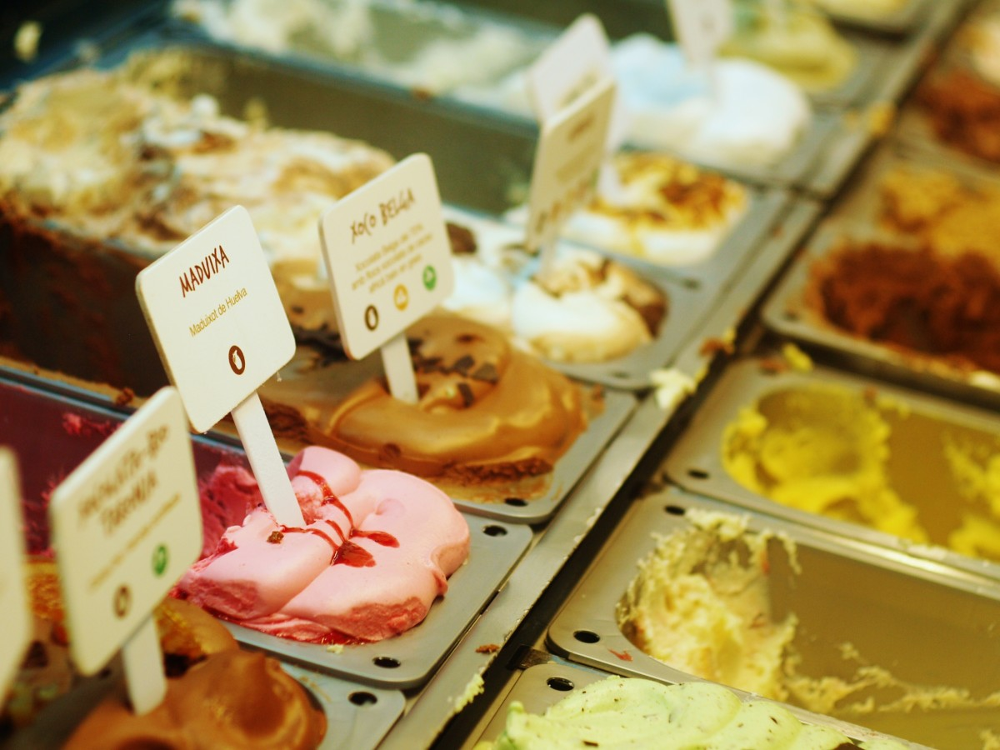

Glacé
Ein leckeres Rezept für Schokoladenglacé!
Zutaten
- 500 ml Milch
- 150 g Zucker
- 4 Eigelb
- 100 g dunkle Schokolade, gehackt
- 1 TL Vanilleextrakt
Zubereitung
- Milch und Zucker in einem Topf erwärmen, bis der Zucker sich aufgelöst hat. Vom Herd nehmen.
- Eigelbe in einer Schüssel verrühren. Die warme Milch-Zucker-Mischung unter ständigem Rühren langsam zu den Eiern gießen.
- Die Masse zurück in den Topf geben und unter ständigem Rühren erhitzen, bis sie leicht andickt (80°C). Nicht kochen lassen!
- Vom Herd nehmen und die gehackte Schokolade und den Vanilleextrakt unterrühren, bis die Schokolade geschmolzen ist.
- Die Masse in eine Eismaschine geben und gemäß Herstellerangaben gefrieren lassen, bis die Konsistenz cremig ist.
- Das fertige Eis in einen Behälter füllen und für mindestens 2 Stunden im Gefrierfach durchfrieren lassen.
Fertig ist das leckere Schokoladenglacé 🧁🚀🥳! Es lässt sich gut mit frischen Früchten, Sahne oder gerösteten Nüssen servieren.